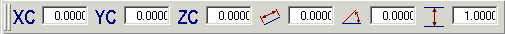

跟踪条是一系列数据输入字段，当基本曲线对话框处于活动状态时，会出现在图形窗口的底部，工作图层输入框的右边。跟踪条中的数据输入字段将根据所要创建的曲线类型和已选中的选项而有所变化。例如，当创建直线时跟踪条如下所示。

在跟踪条中有两种类型的数据输入字段：
位置字段—XC、YC 及 ZC。这些字段会跟踪光标位置，也可以使用它们来输入固定的值
参数字段—这些字段控制曲线的参数，例如直线的长度或圆弧的半径
“用户界面首选项”对话框中还有两个选项影响跟踪条交互：
小数位数—控制字段中显示的小数位数
跟踪—控制字段是否跟踪光标的当前位置